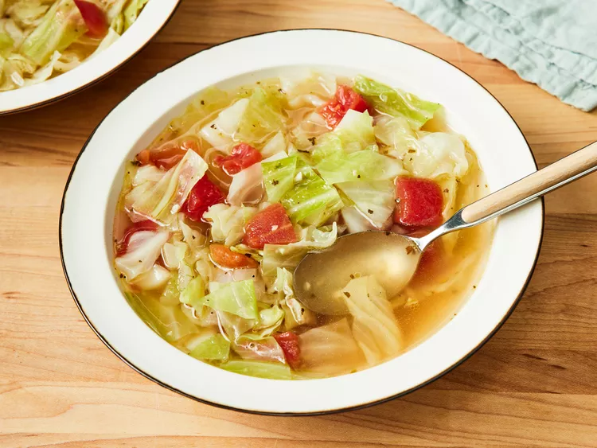

Healing Cabbage Soup

Description
Healing soup for the soulllll. Amazing soup which is a byproduct of being soup, of course, but also nourishing yummy and very healthy.
Ingredients
- 3 tablespoons olive oil
- 1/2 onion, chopped
- 2 cloves garlic, chopped
- 2 quarts water
- 4 teaspoons chicken bouillon granules
- 1 teaspoon salt, or to taste
- 1/2 teaspoon black pepper, or to taste
- 1/2 head cabbage, cored and coarsely chopped
- 1 can Italian-style stewed tomatoes, drained and diced
Steps
- Saute onion and garlic in olive oil in a large pot.
- Add water, chicken bouillon granules, and seasonings.
- Bring to a boil, then stir in cabbage. Cook until cabbage wilts.
- Add tomatos and let simmer.